Logic Analyzer
The Logic Analyzer allows acquisition and visualization of digital inputs.
It is possible to configure the information being visualized in four ways: choose which signals to visualize, group signals in buses, configure protocol interpreters, and visualize them in a specific order.
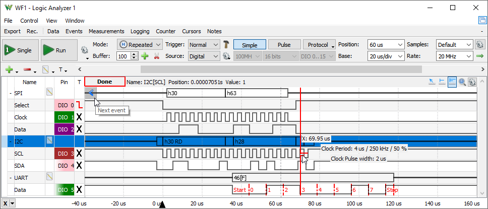
1. Menu
See Menu in Common Interfaces.
1.1. View
2. Control
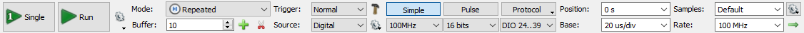
The control toolbar contains the following:
- Single: starts a single acquisition.
- Run/Stop button: starts repeated, continuous acquisition, or recording (see Mode). While the acquisition is in progress, the Run button becomes the Stop button.

- Buffers: adjusts the number of PC and device buffers for repeated captures.
- Run: selects the Run operation for repeated captures to be Continuous, Stop when the specified Buffers or Limit number of captures are collected.
- Device Buffering available with ADP5X50, EclypseZ7. When checked, in Repeated mode the device will store multiple captures at low latency. The number of device buffers is shown in the top of the main time view, DevBuf: used/total. The maximum device buffers is Scope capture memory/ specified Time-Samples/ Enabled device channels.
- Clear buffers deletes captured the PC buffers.
- Delete all Tabs closes all tabs.
- Buffer: The performed acquisitions are stored in the PC buffer in time order. This makes it easy to review a series of repeated acquisitions. The new acquisitions are stored after the currently selected buffer position. If you change the position in the buffer and start a new acquisition, the positions after the selected one will be lost.
- Add Tab: Saves the current acquisition data to a new tab. To close a tab, click the close button at the corner of the tab header. The name of the tab can be edited by double-clicking on the tab header.
- Add Tab with visible data: Saves the currently visible data to a new tab.
- Mode: The following are acquisition modes:
- Repeated: the Run button starts repeated acquisitions.
- Scan Screen: scan acquisition where the sampled data is drawn from left to right. When the right corner is reached, the signal curve plot continues from the left.
- Scan Shift: similar to the screen mode, but when the signal plot reaches the right corner, the curve plot slides to the left.
The scan modes (Screen and Shift) are available when the time-base is greater than a 1 second span, 100 ms/division.
- Record: allows capturing a large number of samples at lower rates. In this mode, the samples are streamed trough the USB limiting the rate, depending on the system and other connected devices, at about 1M samples/sec. The data compression lets you record at higher sample rate periodic bursts of data.
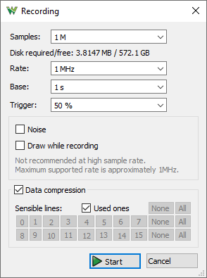
- Sync: allows capturing samples synchronized with the chosen clock and enable signals. In this mode the specified Rate is only used for representation.
- Play: available with Digital Discovery, it lets you generate large amount of previously captured samples or imported from file on DIO lines. At the same time it can also record from DIO and/or DIN lines. It is recommended to use data to be generated in Tabs.
Here 50M samples are generated on 16 DIO lines at 100MHz and it is recored on 70M samples at 100MHz on DIN lines having generator start at 10% position

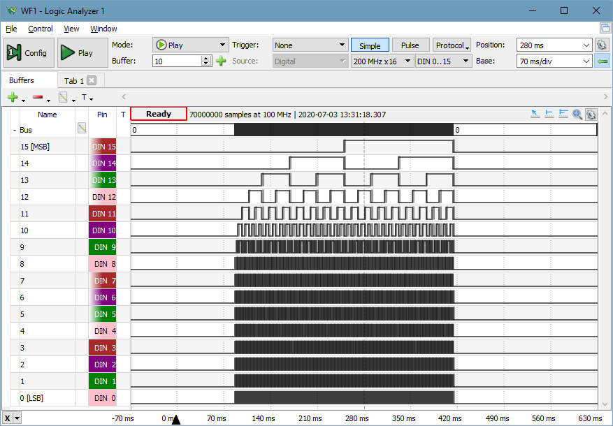
- Trigger: The three trigger modes are:
- Normal: the acquisition is triggered only on the specified condition.
- Auto: when the trigger condition does not appear in approximately two seconds, the acquisition is started automatically. In repeated acquisition mode, when the instrument switches to auto trigger, the next acquisitions are made without waiting again to time-out while a trigger event does not occur and the configuration is not changed. When a new trigger event occurs, or the configuration is changed, the current acquisition will be finished and the next one will wait for the trigger again. It is also the best mode to use if you are looking at many signals and do not want to bother setting the trigger each time.
- None: the acquisition is started without a trigger.
- Source: select trigger source between Analyzer trigger condition on pins, other device instruments, or external trigger signals.
- Edge: selects between rising, falling or either edge for external and internal trigger signals.
- Simple/Pulse/Protocol: selects between Simple, Pulse and Protocol triggering. See Trigger for more details.
- Limit:: selects the maximum frequency. Available with Digital Discovery.
- Inputs: selects the number of input signals and frequency. Available with Digital Discovery.
- Order: selects the DIN/DIO sampling order. Available with Digital Discovery.
- Position: adjusts the horizontal trigger position.
- Base: adjusts the time base.
- Samples: adjusts the number of samples to acquire.
- Rate: adjusts the sample rate.
- Gear: opens a menu with the following options:
- Position as division: select the unit of the position parameter as division or seconds.
- Range Mode: selects the display mode for time base (per division, plus-minus, or full).
- Clock: selects between the internal or the external clock source for Logic Analyzer (available on Electronics Explorer).
- Noise: selects the option to acquire noise samples in half of the buffer.
- Update: this specifies the time period at which the application will check the oscilloscope device status and read the acquired data in repeated Run mode. Increase the time to reduce the update rate.
2.1 Trigger
The simple triggers, like edge and level, can be configured in the Trigger column of the signal grid.
For protocol specific trigger options, see the protocols description.
The following triggers can be configured under the Pulse button option on the control toolbar:
- Glitch: shorter pulse of a signal than the specified time:
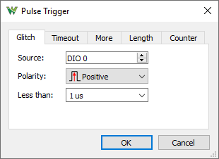
- Timeout: longer pulse of a signal than the specified time, trigger after specified time:
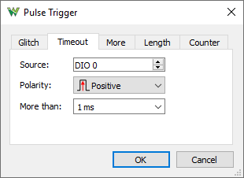
- More: longer pulse of a signal than the specified time, trigger on trailing edge:
- Length: exact pulse length of a signal with the given hysteresis:
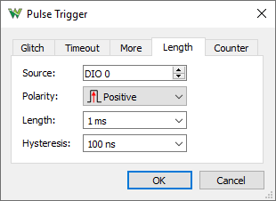
- Counter: trigger after the specified number of edges:
3. Signal Grid
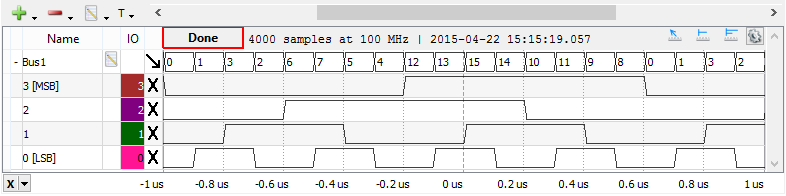
The Signals Grid allows you to customize the display of the signals that you are interested in. See the operations found in the Lists section.
The grid menu contains the following options:
- Add: It is possible to add signals, define, and add a bus or interpreter.
One or more signals can be selected and added at a time.
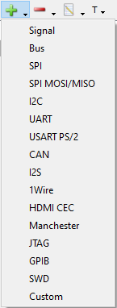 
The Bus, SPI, I2C, UART, CAN, I2S, 1-Wire, HDMI CEC, Manchester, JTAG, GPIB, SWD, SAE J1850 VPW, and Custom menus open the corresponding property editor, and after configuring them, it will be added to the grid.
- Remove: It is possible to remove the selected items or the entire list.

- Edit: Under the Edit menu, the following operation can be performed:
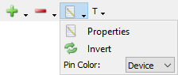
- Property: Opens the properties editor for the currently selected item.
- Invert: Opens an editor where lines to be inverted can be selected.
- Pin Color: Lets you select the Pin column color: Device specific flying wire color, custom or no color.
The grid columns are as follows:
- Height: the row height can be changed in the first column.
- Expand/Collapse: each bus and interpreter can be individually expanded or collapsed.
- Edit: clicking on the edit icon of a signal, bus, or interpreter row opens the editor.
- Pin: Shows the device digital IO pin number. Multiple used signals are marked with star (ex: *3). The signals which are not defined are noted with ND.
- Reset/Trigger: allows you to configure the trigger condition for the Logic Analyzer pins. In this column, a left or right mouse-click opens a drop-down where the trigger condition can be selected. When multiple rows are selected, a right-click sets the trigger for all the selected pins.
The overall trigger condition is built by AND-ing all level conditions together with the result of OR between edge conditions of each pin. The following trigger conditions are possible for each pin:
- Don't Care: not
used in trigger condition.
- Low: low logic level.
- High: high logic level.
- Rising Edge: signal transition from low to high level.
- Falling Edge: signal transition from high to low level.
- 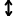 Any Edge: any signal transition.
The grid context menu opens on mouse right-click. This contains similar buttons as the grid toolbar's Add and Remove menus.
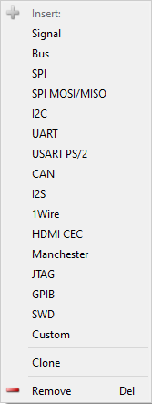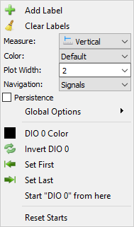
The waveform area context menu, the following operation can be performed:
- Add Label: adds a new editable text label to the plot.
- Clear Labels: removes all the labels from the respective plot.
- Color: selects the color theme for this plot.
- Plot Width: sets the thickness of the waveform, expressed as points.
- Navigation: sets the navigation direction on the sides of the rows or disables it.
- Persistence: check to enable graphical persistence.
- Global Options: lets you adjust the graphics options of the application.
- ... Color: Lets you select the Pin column color: Device specific flying wire color, custom or no color.
- Invert ...: invert current row data.
- Set First/Last: sets the current position as left/right most position by adjusting Time Position and Base
- Start ... from here: sets the current position as starting/ending point for the interpreter.
- Reset Starts: reset the start of all interpreters
The waveform area is divided in the following sections: scroll, state, waveform (center), and bottom.
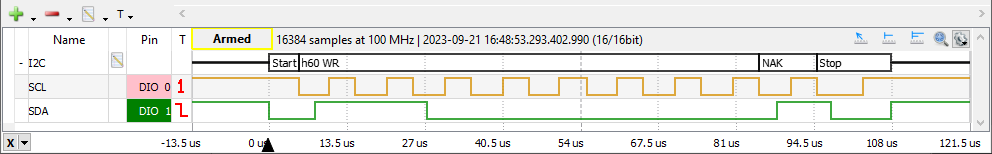
- Using the scroll bar, the time position can be adjusted. Holding the Ctrl key speeds up and the Shift key slows down the mouse wheel action. Clicking on the arrows changes the position by a base span and double-clicking sets the leftmost or rightmost position. Double-clicking on the scroll area resets the time to show the entire acquisition.
- In the state area the following information is shown: the state of the logic and viewed acquisition information: number of samples, rate, and capture time. See Acquisition States for more information.
- The center area is used to display rows containing the graphical visualization of waveforms. The plot area context menu allows color adjustment, bit invert, Set First/Last will set the current position as left/rightmost, line width, specifying the protocol interpreter start position (useful for UART, CAN, or SPI without select signal), or reseting any start positions.
- On the bottom area, the major time grids are displayed. On center as well on the bottom area, the time position can be adjusted by a horizontal left mouse button drag while the time base can be adjusted by a right mouse button drag. The mouse wheel zooms out or in on the cursor position. Holding the Ctrl key speeds up and the Shift key slows down the wheel action. Holding the Alt key swaps the adjustment of time position and base.
With higher row height for Bus or protocol, the analog representation of the values is drawn.
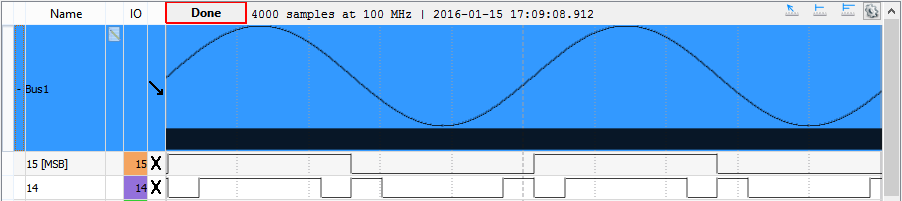
3.1. Quick Measure
See Quick Meausure in Common Interfaces.
The Quick Measure can be used in the following tree modes:
- Free: Allows measuring the distance between two mouse clicks, expressed in time and frequency. It also shows the number of rising and falling edges in this region for signals.
- Vertical: It is similar to Free mode but the cursor sticks to signal transitions.
- Pulse: When the mouse cursor position is in a signal row, it will place a vertical cursor along with two more horizontal ones towards the right, measuring the pulse-width and period. Otherwise, it will place a single vertical cursor showing the time position and the waveform's level at the intersections with the vertical cursor.
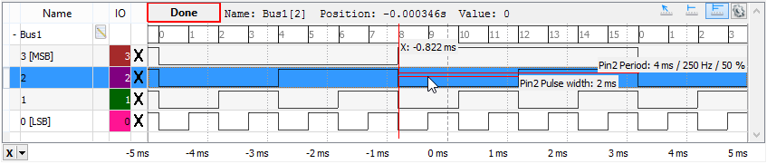
3.2. Cursors
The Cursors are available for main time view. See Cursors.
The Cursor's drop-down menu contains adjustment controls for the position, reference cursor, delta x value, and remove button.
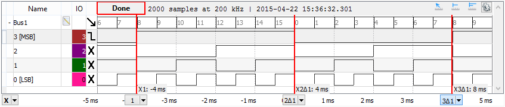
4. Protocols
The protocols property editor can be opened for the selected protocol under the grid toolbar edit menu.
4.1. Signal

In the signal property editor, the name can be specified and the device pin changed.
4.2. Bus
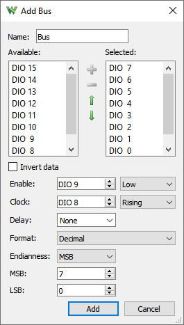
In the bus property editor, the following can be configured:
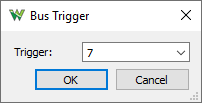
The BUS trigger lets you specify the value to trigger on.
4.3. SPI
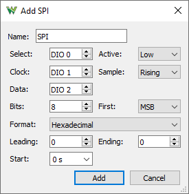
SPI interpreter lets you define a synchronous serial data link with the following options:
- Select: optional slave or chip select signal with low or high active level.
- Clock: is the serial clock with data sampling on rising or falling edge.
- Data: is the serial data signal (MOSI or MISO) with least or most significant bit shifting first.
- Bits: the number of data bits in a transmission word.
- Format
- Leading: skips the given number of starting bits in value calculation.
- Ending: skips the given number of ending bits in value calculation.
- Start: the protocol interpreter with the given delay with respect to the first sample.
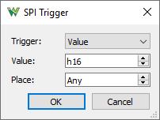
The SPI trigger wizard lets you specify the following options:
- Trigger: select between trigger on SPI Start, Stop, and a specific Value.
- Value: specify the value to trigger on.
- Place: specify the position of the value.
4.4. SPI MOSI/MISO
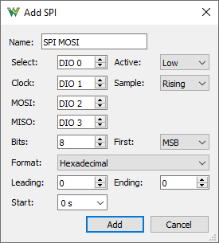
SPI interpreter lets you define a synchronous serial data link with the following options:
- Select: optional slave or chip select signal with low or high active level.
- Clock: is the serial clock with data sampling on rising or falling edge.
- MOSI: is the serial master output slave input data signal with least or most significant bit shifting first.
- MISO: is the serial master input slave output data signal.
- Bits: the number of data bits in a transmission word.
- Format
- Leading: skips the given number of starting bits in value calculation.
- Ending: skips the given number of ending bits in value calculation.
- Start: the protocol interpreter with the given delay with respect to the first sample.
4.5. I2C
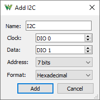
For I2C or Two-wire Interface interpreter, the clock and data signals can be selected. The address representation selects between 7 bits, 8 bits with or without the read/write bit.
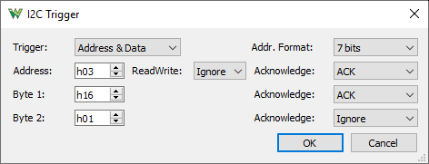
The I2C trigger wizard lets you specify the following options:
- Trigger: select between trigger on SPI Start, Stop, Any ACK/NACK, and specific Address, Read/Write, Acknowledgment, and Data options.
- Address/Data: specify the consecutive address and data values or select to ignore it.
- Read/Write: select between read, write, or ignore the operation type.
- Acknowledge: select between ACK, NAK, or ignore the acknowledgment.
4.6. UART
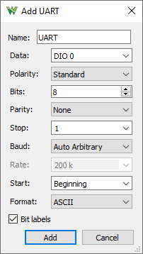
The UART interpreter for asynchronous serial protocols lets you select:
- Data: the data signal.
- Bits: the number of data bits in a transmission word.
- Polarity: selects between standard and inverted signal polarity.
- Parity: selects between None, Odd, Even, Mark (High), and Space (Low) parity modes.
- Stop: specify the stop length in bits.
- Baud: selects between Manual, Auto Standard (..,4800,9600,..), and Auto Arbitrary rate.
- Rate: allows specifying the speed or bits per second of the line.
- Start: the protocol interpreter with the given delay with respect to the first sample.
- Format
- Bit labels check to indicate bit positions
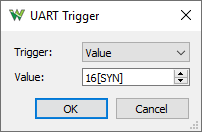
The UART trigger wizard lets you specify the following options:
- Trigger: select between trigger on Break, Idle, and a specific Value.
- Value: specify the value to trigger on.
4.7. USART PS/2
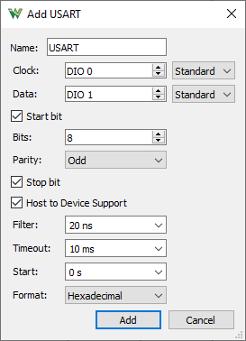
The USART interpreter for synchronous serial protocols lets you select:
- Clock: the clock signal.
- Data: the data signal.
- Polarity: selects between standard and inverted clock and data signal polarity.
- Start: check to consider the first bit as start.
- Bits: the number of data bits in a transmission word.
- Parity: selects between None, Odd, Even, Mark (High), and Space (Low) parity modes.
- Stop: check to consider the last bit as stop.
- Host to Device Support: check to handle PS/2 style host to device communication with device acknowledgment at the end.
- Filter: select the minimum expected bit length for glitch filtering.
- Timeout: select the maximum expected transmission length for recovery.
- Start: the protocol interpreter with the given delay with respect to the first sample.
- Format
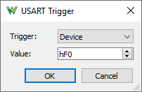
The USART trigger wizard lets you specify the following options:
- Trigger: select between trigger on Start, Device to Host and Host to Device transmission.
- Value: specify the value to trigger on.
4.8. CAN
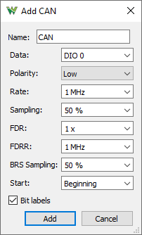
The CAN bus (controller area network) interpreter lets you select:
- Data: the data signal.
- Polarity: selects between low and high polarity signaling.
- Rate: allows specifying the speed or bits per second of the line.
- Sampling: specifies sampling position.
- FDR: Flexible Data Rate as multiplier.
- FDRR: Flexible Data Rate as frequency.
- BRS: specifies Bit Rate Switch sampling position.
- Start: the protocol interpreter with the given delay with respect to the first sample.
- Bit labels check to indicate bit positions
The data is decoded with following notation:
- SOF: Start of Frame, 1bit
- BI: Base Identifier, 11bits
- SRR/RTR: Substitute Remote Request, 1bit
- IDE: Identifier Extension Flag, 1bit
- IE: Identifier Extension, 18bits
- RTR: Remote Transmission Request, 1bit
- EDL: Extended Data Length, 1bit
- R0: Reserved, 1bit
- BRS: Bit Rate Switch, 1bit, when flag is set it will use the FDR option
- ESI: Error State Indicator, 1bit
- DLC: Data Length Code, 4bits
- CRC: Data Length Code, 15, 17 or 21bits
- OK/NOK: CRC Delimiter bit used to display calculated CRC, 1bit
- ACK: Acknowledge Slot, 1bit
- ACKD: Acknowledge Delimiter, 1bit
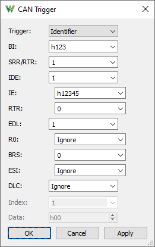
The CAN trigger wizard lets you specify the following options:
- Trigger: select between trigger on Error, Brake, a specific Identifier and Flags, and Data.
- BI: Base Identifier, Ignore or 11bits
- SRR/RTR: Substitute Remote Request, Ignore or 1bit
- IDE: Identifier Extension Flag, Ignore or 1bit
- IE: Identifier Extension, Ignore or 18bits
- RTR: Remote Transmission Request, Ignore or 1bit
- EDL: Extended Data Length, Ignore or 1bit
- R0: Reserved, Ignore or 1bit
- BRS: Bit Rate Switch, Ignore or 1bit
- ESI: Error State Indicator, Ignore or 1bit
- DLC: Data Length Code, Ignore or 4bits
- Index: specify the data index.
- Data: specify the data byte value.
4.9. I2S
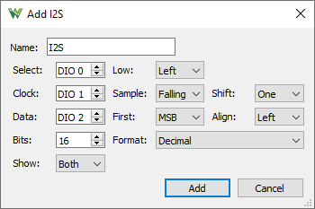
The I2S interpreter lets you define a synchronous serial data link with the following options:
- Select: word select signal.
- Low: low selects channel left or right.
- Clock: is the serial clock.
- Sample: data sampling on rising or falling edge.
- Shift: data bits are shifted with respect to select signal.
- Data: is the serial data signal.
- First: select least or most significant bit shifting first.
- Align: data bits are right or left aligned with respect to frame edges.
- Bits: the number of data bits in a transmission word.
- Format
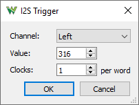
The I2S trigger wizard lets you specify the following options:
- Channel: select between Left and Right channel trigger.
- Value: specify the value to trigger on.
- Clocks: specify the number of clock cycles in a frame. This can be different from number of bits.
4.10. 1-Wire
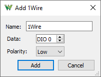
The 1-Wire interpreter lets you select:
- Data: the data signal.
- Polarity: selects between low and high polarity signaling.
It can decode the following 1-Wire data:
Reset
- Presence
- Read ROM [0x33]
- Skip ROM [0xCC]
- Match ROM [0x55]
- Search ROM [0xF0]
- Overdrive Skip ROM [0x3C]
- Overdrive Match ROM [0x69]
- Alarm Search [0xEC]
- Convert T [0x44]
- Resume [0xA5]
- Write Scratchpad [0x4E]
- Read Scratchpad [0xBE]
- Recall [0xB8]
- Read Power Supply [0xB4]
- Command [0x..]
- Family: 0x..
- SN LSB: 0x..
- SN MSB: 0x..
- CRC: 0x..
- Data: 0x..

The 1-Wire trigger wizard lets you specify the following options:
- Trigger: select between trigger on Reset and a specific Value.
- Speed: select between standard and overdrive.
- Command: specify the command to trigger on.
- Family: specify the family field to trigger on.
4.11. HDMI CEC
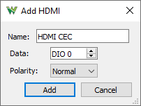
The HDMI CEC interpreter lets you select:
- Data: the data signal.
- Polarity: selects between low and high polarity signaling.
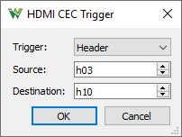
The 1-Wire trigger wizard lets you specify the following options:
- Trigger: select between trigger on Start and Header addresses.
- Source: specify source address.
- Destination: specify destination address.
4.12. Manchester
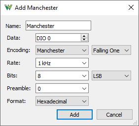
The Manchester interpreter lets you select:
- Data: the data signal.
- Encoding: selects the encoding method and polarity or code.
- Rate: allows specifying the speed or bits per second of the line.
- Bits: the number of data bits in a transmission word and bit direction LSB/MSB first.
- Preamble: the number of bits to ignore on start of transmission.
- Format
The encoding methods:
- Manchester: There is always a transition in middle of the bit. The direction of transition indicates the data.
- Mid Falling One: falling edge in the middle represents logic 1, XNOR, as per G. E. Thomas
- Mid Rising One: rising edge in the middle represents logic 1, XOR, as in IEEE 802.3-4 standards
- Differential: There is always a transition in middle of the bit. The presence of transition at the start of the bit indicates the data.
- Start Trans Zero: transition at start of the bit represents logic 0
- Start Trans One: transition at start of the bit represents logic 1
- BiPhase: There is always a transition at the start of each bit.
- Mark: transition in the middle of bit represents logic 1
- Space: transition in the middle of bit represents logic 0
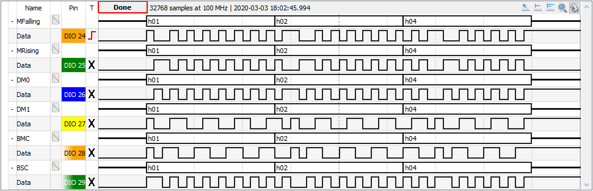
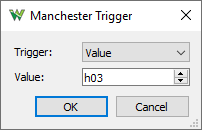
The Manchester trigger lets you specify the following options:
- Trigger: select between trigger on Start and a specific Value.
- Value: specify the value to trigger on.
4.13. JTAG
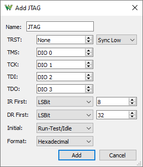
The JTAG interpreter lets you select:
- TRST: the test reset signal and options for this: synchronous with TCK or asynchronous, active low or high.
- TMS: the test mode select signal.
- TCK: the test clock signal.
- TDI: the test data in signal.
- TDO: the test data out signal.
- IR First: the instruction register bit order between least and most signification bit first, and the word size in number of bits.
- DR First: the data register bit order between least and most signification bit first, and the word size in number of bits.
- Initial: the initial TAP controller state
- Format
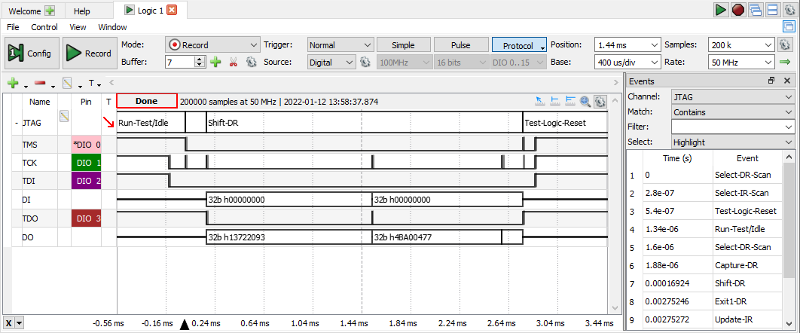
The JTAG TAP states are the following: Test-Logic-Reset, Run-Test/Idle, Select-DR-Scan, Select-IR-Scan, Capture-DR, Capture-IR, Shift-DR, Shift-IR, Exit1-DR, Exit1-IR, Pause-DR, Pause-IR, Exit2-DR, Exit2-IR, Update-DR, Update-IR.
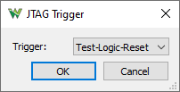
The JTAG trigger lets you select between TLR and RTI. Note these use 0x1F and 0x2E TMS bits.
4.14. GPIB
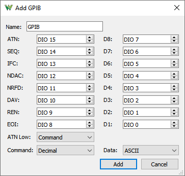
The GPIB interpreter lets you select:
- ATN: Attention signal.
- SEQ: Service Request signal.
- IFC: Interface Clear signal.
- NDAC: Not Data Accepted signal.
- NRFD: Not Ready for Data signal.
- DAV: Data Valid signal.
- REN: Remote Enable signal.
- EOI: End or Identify signal.
- D#: GPIB DIO signals.
- ATN Low: select ATN low to represents command or data.
- Command: Format for command.
- Data: Format for data.
The D1-7 bits are sampled at DAV falling edge as data or command depending on ATN signal level.
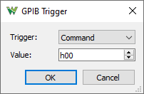
The GPIB trigger lets you select and specify Command or Data value to trigger.
4.15. SWD

The Serial Wire Debug interpreter lets you select:
- SWDCK: Clock signal.
- SWDIO: Data signal.
- Format
The protocol sections:
- RST: Reset at least 50 bits otherwise ERROR.
- S: Start high bit.
- AP|DP: Access Port (high) or Debug Port (low) bit.
- RD|WR: Read (high) or High (low) bit.
- A:##: Address field [2:3] 2 bits DP: IDCODE, RESEND, CTRL/STAT, RDBUFF and AP: CSW, TAR, DRW, BD#, CFG, BASE, IDR.
- Y:OK|ERROR: Parity error bit for APnDP, RDnWR, A[2:3] bits.
- P|P:ERROR: Stop bit.
- K|K:ERROR: Park bit.
- ATrn: Turnaround bit(s) before target acknowledge.
- ACK:OK,WAIT,FAULT,##: Acknowledge[0:2] 3 bits.
- DTrn: Turnaround bit(s) before data write.
- Data:#: 32 data bits.
- DY:OK|ERROR: Data parity error bit.
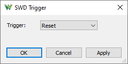
The SWD trigger lets you select Reset.
4.16. SAE J1850 VPW
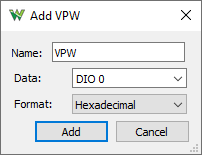
The SAE J1850 VPW interpreter lets you select:
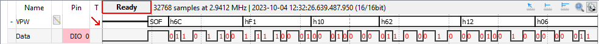
4.17. Custom
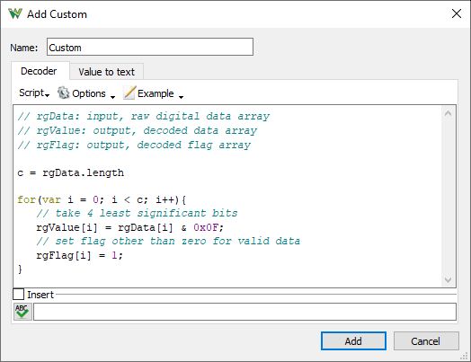
The Custom interpreter allows defining the custom protocol interpreter. See Script in Common interfaces.
The interpreter is defined by a Decoder and a Value to text script.
The Decoder has the rgData as input, the array of acquisition samples, and outputs two arrays: rgValue to store the decoded 32-bit values and rgFlag to characterize each value, like a mask.
The Value to text script will be called when a value needs to be displayed, converting value and flag to text format.
5. Views
5.1. Data
The Data view displays the data samples.
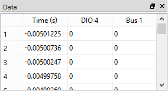
The column header shows the sample index and the first column shows the time stamp followed by the values of the added channel's components.
5.2. Events
The Events view displays the data changes and the time stamps for the selected channel.
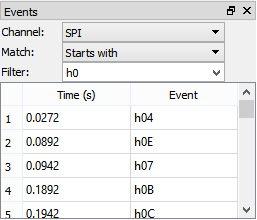
The first column shows the event index and the second shows the time stamp followed by the event for the selected channel.
The events can be filtered by containing, equal, starting with, ending with, or not the give text.
5.3. Measurements
The Measurements view shows the list of the selected measurements.
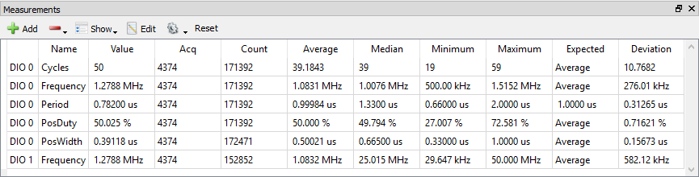
The first column in the list shows the channel, the second shows the type, and the third shows the measurement result. See the mouse operations found in the Lists section.
Pressing the Add Default Measurement button opens the Add Measurement window. On the left side is the channel list, and on the right side is a tree view containing the measurement types in groups. Pressing the Add button here (or double-clicking an item) adds it to the measurement list.
The Show menu options allows you to create statistics out of measurements for current capture or across multiple acquisitions, which can be cleared with the Reset button.
5.4. Logging
See Logging in Common Interfaces.
The script allows custom saving of data or processed information. The Locals are the instrument object called Logic. Index and Maximum are the values shown above the script.
// condition for saving, DIO0 to exist
if('DIO0' in Logic.Channels){
// instantiate file object for acquisition
var file = File("C:/temp/dio0_"+Index+".csv")
var data = Logic.Channels.DIO0.data
// write data to file
file.write(data)
// increment Index
Index++
}
5.5. Cursors
The X Cursors show cursor information in table view. See Cursors for more information.
6. Export
See Export in Common Interfaces.